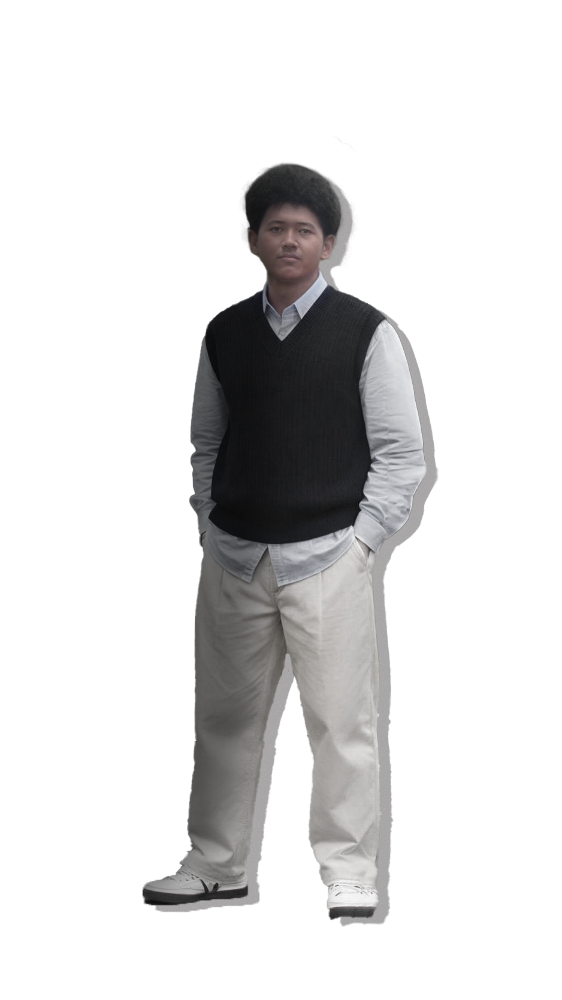
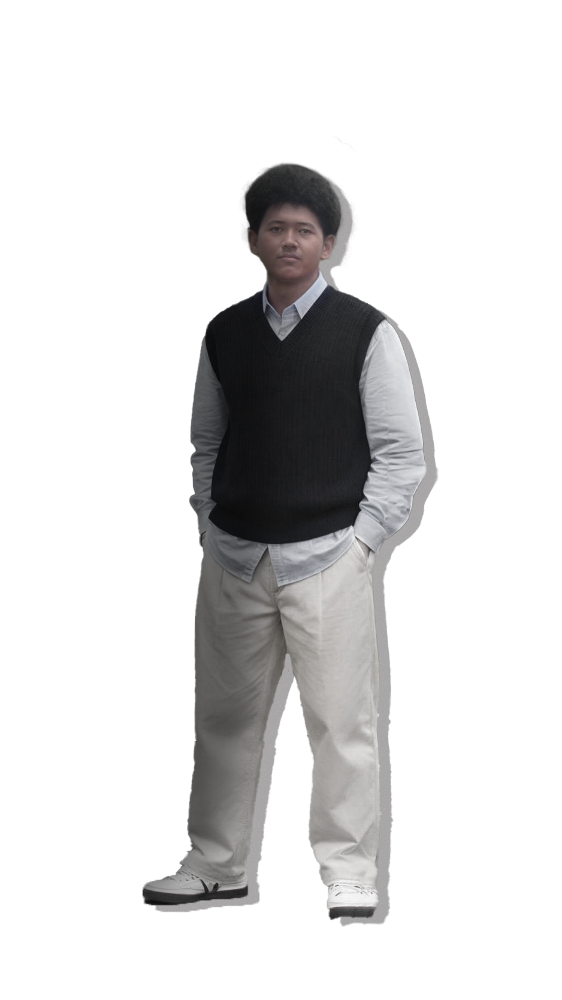
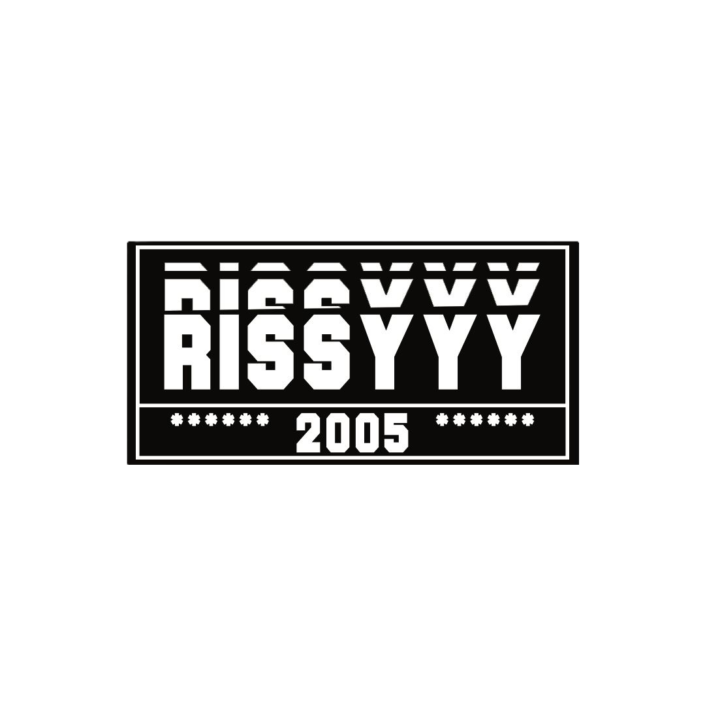
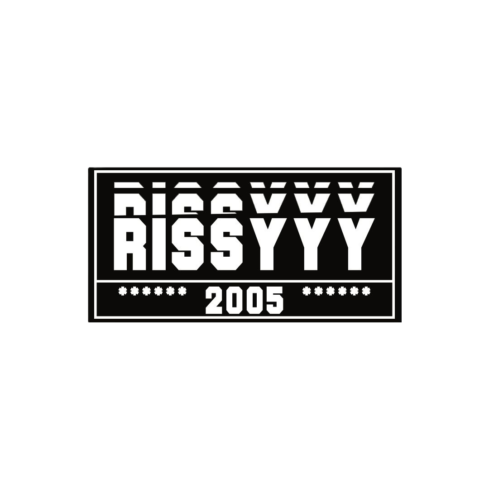
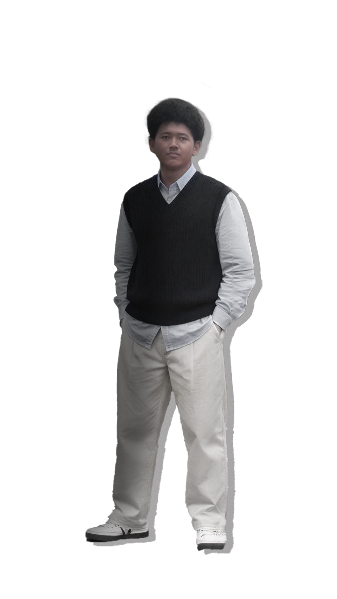
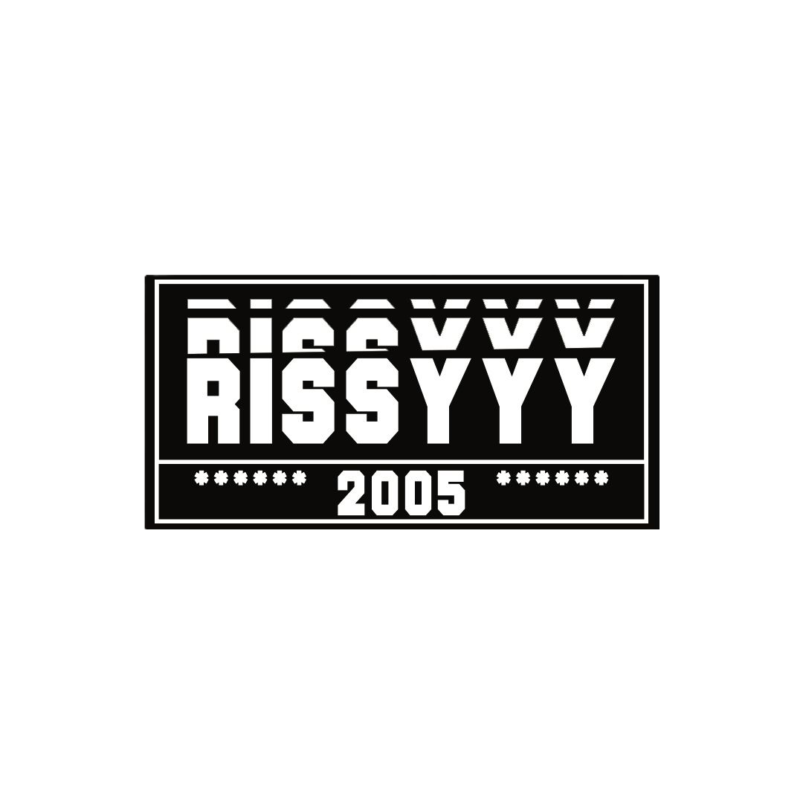

Graphic
Designer
Mohamad Ariel Saputra D Loi
"kenapa bisa jadi orang yang suka desain?, karena desain itu bisa membuat kita
mengungkapkan perasaan ke orang lain tanpa harus berbicara langsung."
 

 

"kenapa bisa jadi orang yang suka desain?, karena desain itu bisa membuat kita
mengungkapkan perasaan ke orang lain tanpa harus berbicara langsung."

